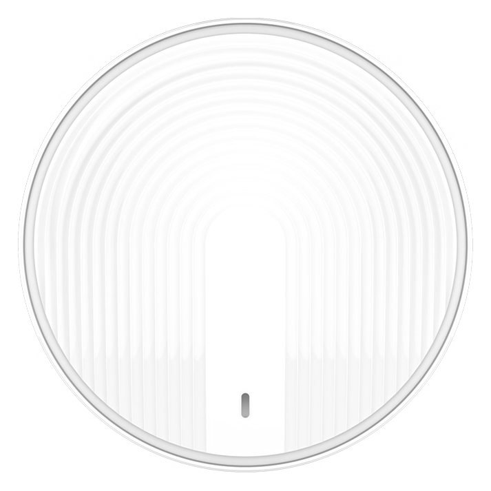
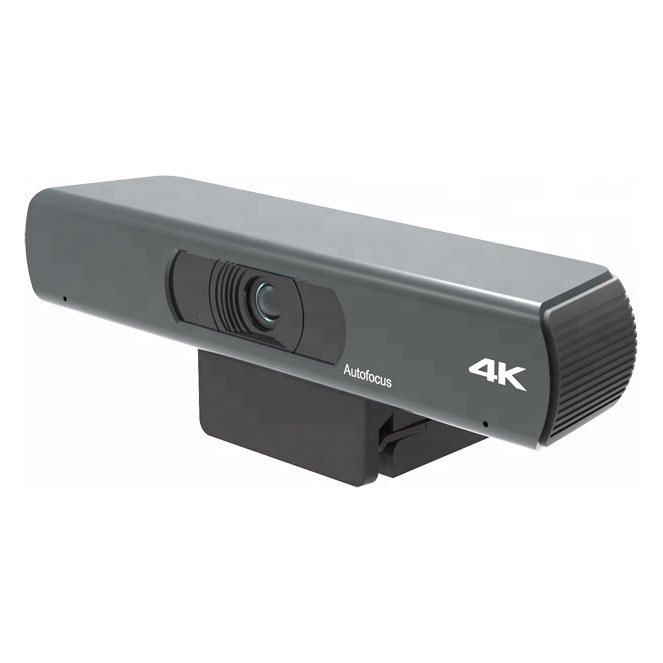

通信设备
IP67防水坚固PMR446对讲机套装 （6台, 含六联座充, 耳麦可选）
每台提供16个信道、每信道121个私密码（共1,936种组合）、0.5 W发射功率和1,200 mAh锂电池；座充可同时为六台设备充电。专业买家关注欧盟版本（PMR446而非FRS）、RED符合性声明、可证明的IP67测试以及与设备匹配的座充。
技术参数
| 频率/信道 | PMR446，16个信道 × 121个私密码（共1,936种组合） |
|---|---|
| 发射功率 | 0.5 W |
| 防护等级 | IP67（水深1米，30分钟） |
| 电池 | 每台锂电池3.7 V，1,200 mAh |
| 重量 | 每台含电池约280 g |
| 座充 | 6槽，每槽4.2 V / 500 mA，电源5 V / 4 A |
| 编程 | 在设备上选择信道 |
| 海关编码（HS） | 85176200 |
欧盟标准与法规
RED 2014/53/EU + EN 300 296无线电设备指令（CE）及带一体天线陆地移动设备（模拟语音）标准EN 301 489-1 / -5无线设备及专用陆地移动无线电（PMR）设备电磁兼容EN 60529外壳防护等级（IP代码），IP67证明EN 62368-1音视频、信息和通信技术设备安全（对讲机、座充、电源）RoHS 2011/65/EU电气电子设备有害物质限制(EU) 2023/1542锂电池适用的欧盟电池法规
搭配产品
本类别其他产品
天通/北斗卫星电话 （仅限亚太地区）
支持卫星语音和短信的三防户外手机支持卫星语音和短信的坚固5G手机，适用于无移动网络的作业，但没有全球覆盖。
卫星短信终端 （Iridium SBD, GNSS）
DMR446数字手持对讲机 （免许可）免许可数字手持对讲机，即使在机械噪声下也能在覆盖边缘保持清晰通话。
4G/LTE PoC公网对讲机 （插SIM卡, 蜂窝网络一键通话）通过移动网络通话的手持对讲机，不受无线电距离限制，可连接多个工地和办事处。
带卫星短信的三防户外手机带卫星短信的坚固5G手机，适合需要在无信号工地发送紧急消息的工地负责人和班组长。
手持对讲机备用锂电池 （2,000–2,600 mAh, 机型专用）
手持对讲机PTT手咪 （按机型接口）带PTT键的对讲机肩麦。

室外4G LTE路由器 （SIM卡槽、PoE, Cat4 300Mbps）适用于工地和偏远场所的防水LTE CPE。

Wi-Fi 6吸顶AP （双频、PoE, 1500Mbps）适用于办公室、酒店和诊所的PoE吸顶AP。

4K USB会议摄像机 （自动对焦、EPTZ）适用于会议室的USB 3.0摄像机。

Cat6 RJ45跳线 （3米）办公及机柜用网络跳线。
15英寸蓝牙拉杆电池音箱适用于活动、培训和工地的移动扩音。
8口千兆PoE交换机 （SFP上联）适用于摄像机、AP和VoIP的PoE交换机。

4G VoLTE桌面电话 （SIM卡, 固话替代）适用于无固话场所的SIM电话。